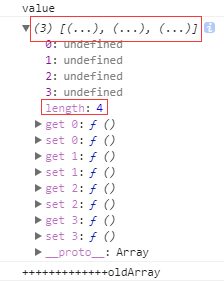
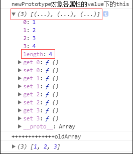

首先非常感谢：http://hcysun.me/2016/04/28/JavaScript%E5%AE%9E%E7%8E%B0MVVM%E4%B9%
8B%E6%88%91%E5%B0%B1%E6%98%AF%E6%83%B3%E7%9B%91%E6%B5%8B%E4%B8%80%E4%B8%AA%E6%99%AE%
E9%80%9A%E5%AF%B9%E8%B1%A1%E7%9A%84%E5%8F%98%E5%8C%96/
其次,虽然作者写的很通俗易懂,但是发现我个人在某些细节方面还是不能理解,所以就自己带着问题去实际敲打一遍,由于不会配置环境也没有clone作者的项目,就用了直接在浏览运行html方法
我的项目地址：https://github.com/lizhongzhen11/obj/blob/master/src/obj.js
该方法实现的很巧妙,或者对我这种菜鸟来说要学的有很多。学这个方法并且深入理解能写出来的话一定要把
this好好理解下！！！
踩过的大坑
在完善监听数组对象值改变的过程中,一开始没大看懂,敲下来仔细看慢慢有点感觉了,但是测试发现监听到的数组里面的元素是空,类似下面这样的：
旧的值：,,,，新的值：,,
这明显是有问题的。我用来测试的数组是
这打印出来明显是不对的。
然后我开始了长达两天的填坑之旅,真的有两天！
我在obj.js里面各个位置不断地使用console.log()来打印查找问题,发现在：
上面的console.log(this)这里有问题,打印出来是一个长度为4的数组(谷歌浏览器控制台打印出来有点问题),但是里面所有的元素值都是undefined,然后打印了oldArray发现是一个长度为3的数组且所有元素值为undefined。

解决
这就很尴尬了,真的,贼尴尬。
是我变量名写错了。。。
原来的：
我没仔细看,粗心大意！这里的
obj是Object.prototype,对它用[key]当然是undefined了！！！
改成：var oldVal = arr[key]
最后,感谢昝老师！我自己都放弃了,开始看this相关的讲解了,以期望找到解决方案,结果昝老师一个一个的比对原作者的代码,终于找到了,浪费了昝老师宝贵的时间,我深感惭愧！
疑问
但是这里我又发现了同样的事件,虽然不影响最终结果,谷歌浏览器打印输出的数组依然是长度3点开长度是4,很奇怪：

大概找到了解释,虽然不理解其原理,但也算学习到了：
https://segmentfault.com/q/1010000011091088
整合对象和数组监听又踩的坑
|
|
这边整合又出了个问题,发现Object.keys(ob).forEach()内部的this是undefined,
真的很奇怪后来想到作者源代码每次都在Object.keys(ob).forEach()最后把this也传入,而我之前一直没传却也成功了以为作者多此一举。
现在发现自己还是太年轻,以作者的水平写出来的代码我都要花三四天才能吃透,轮得到我发现优化？
正巧今天看了《你不知道的js》,当中有讲到this丢失默认值是undefined